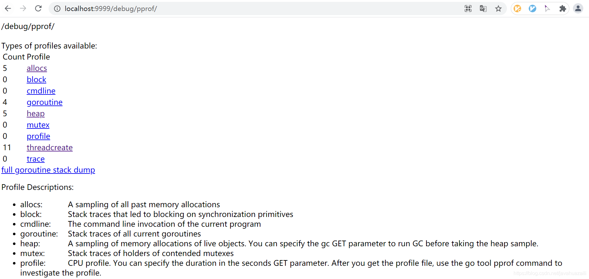
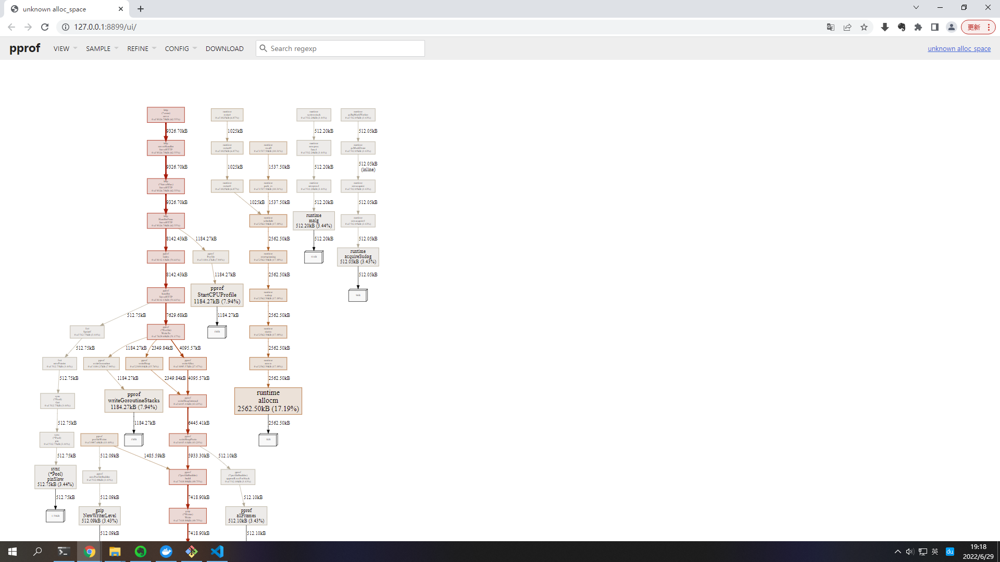

1
import(
2
_ "net/http/pprof"
3
)
Demo全部代码如下：
1
package main
21
import (
22
"fmt"
23
"log"
24
"net/http"
25
_ "net/http/pprof"
26
)
27
28
func main() {
29
http.HandleFunc("/", indexHandler)
30
http.HandleFunc("/hello", helloHandler)
31
log.Fatal(http.ListenAndServe(":9999", nil))
32
}
33
34
// handler echoes r.URL.Path
35
func indexHandler(w http.ResponseWriter, req *http.Request) {
36
fmt.Fprintf(w, "URL.Path = %q\n", req.URL.Path)
37
}
38
39
// handler echoes r.URL.Header
40
func helloHandler(w http.ResponseWriter, req *http.Request) {
41
for k, v := range req.Header {
42
fmt.Fprintf(w, "Header[%q] = %q\n", k, v)
43
}
44
}`)
45
}
46
}
47
48
// handler echoes r.URL.Header
49
func helloHandler(w http.ResponseWriter, req *http.Request) {
50
for k, v := range req.Header {
51
fmt.Fprintf(w, "Header[%q] = %q\n", k, v)
52
}
53
}
go run main.go拉起服务
3、浏览器访问

4、使用pprof
go tool pprof http://127.0.0.1:9999/debug/pprof/profile
如下图：
5、然后我们可以输入命令web，其会给我们的浏览器弹出一个.svg图片，其会把这些累积关系画成一个拓扑图给我们。
如下图 ：
此时浏览器会自动访问到svg图片：
6、或者直接执行
go tool pprof -alloc_space -cum -svg http://127.0.0.1:9999/debug/pprof/heap > heap.svg
或者
go tool pprof -http 127.0.0.1:8899 http://127.0.0.1:9999/debug/pprof/allocs
此时会在本地拉起一个8899的服务，用来实时中转展示服务上pprof上的对应指标
自动打开浏览器 访问 http://127.0.0.1:8899/ui通过左上角的菜单栏可以选择看“火焰图’”等等
